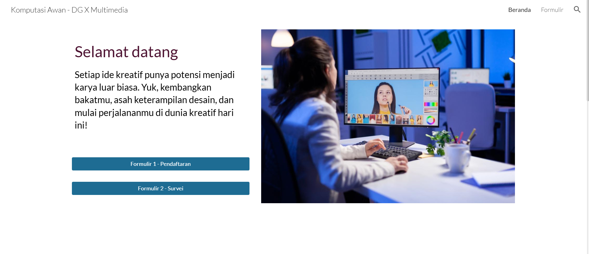

Tugas 1Integrasi Google Forms Google Sheets dan Google Sites
Hasilnya mampu membuat dua Google Form, mengumpulkan respons ke dalam satu file Google Sheet pada tab yang berbeda, serta menampilkan akses ke formulir melalui sebuah Google Sites yang rapi dan mencerminkan identitas mahasiswa.